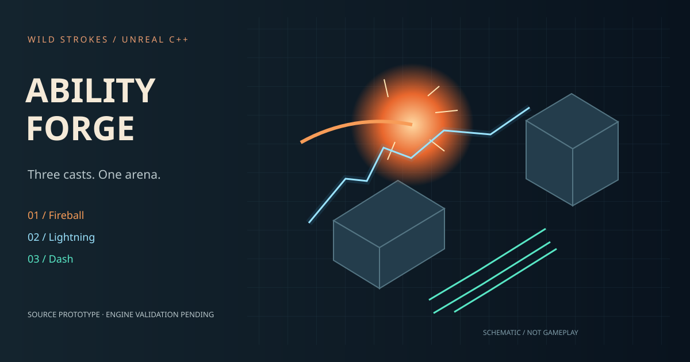

Fireball
Projectile movement, contact explosion, radial falloff and occlusion-aware target damage. Failed spawns preserve the cooldown.
0.8s cooldown260 cm blast
UNREAL ENGINE 5.5 / C++ SOURCE
A gameplay foundation for fireball, lightning and dash. Explore independent cooldowns, collision-driven damage and material impact routing.

Projectile movement, contact explosion, radial falloff and occlusion-aware target damage. Failed spawns preserve the cooldown.
Camera-assisted aiming, a muzzle trace, short beam geometry and separate metal, stone and glass impact routing.
Move in the input direction, stop at blocking geometry and leave brief trail bursts. No invulnerability or teleport-through-walls logic.
BEHIND THE ABILITIES
The source includes a runtime arena, six health targets, a camera controller and a cooldown HUD. A local editor script creates the starter material assets and a blank map. Niagara slots let authored effects replace the primitive bursts.
The defaults use engine cubes and spheres. Final VFX assets and visual acceptance require Unreal Editor.
OPEN LOCALLY